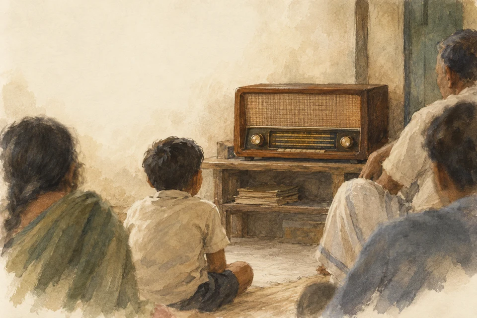

The Radio Veterans
Read in book
In the eighties, All India Radio was the most popular source of entertainment, education, and information in Odisha. Doordarshan was then in a nascent stage and there was no private television channel like the present day. There was also no FM Radio those days. There were few film halls in urban areas mostly displaying Hindi films and hardly three-four Odia films were being produced in a year. Obviously, radio programs were very much popular among people of all ages.
There were four radio stations in the State respectively at Cuttack, Sambalpur, Berhampur, and Jeypore. Besides, there was a commercial channel called Vividh Bharati in Cuttack with a limited broadcasting area. It was exclusively devoted to entertainment programs with advertisements. At 6.00 am in the morning when the signature tune of All India Radio was on air each household used to tune to it. The morning session was till 9.30 am.
There was an afternoon session from 12.30 to 2.30 pm. The evening session was from 6.00 pm till 10.30 pm. People used to glue to the radio sets during these hours. It was not necessary to sit in front of the radio set and one can listen to the program while simultaneously doing other work in close vicinity. Even in shops and business establishments presence of the radio was visible. State Government used to supply free radio sets to educational institutions, youth clubs and women groups called Mahila Samitis for promotional purposes. Listener Groups among children, adolescents, youth women, and farmers were formed aligned with special programs being broadcast for such groups. The listeners were in love with some of the broadcasters and the programs and they were very often topics of discussion.
Each year special programs were broadcast on festive occasions like Dussehra. The Annual Drama Festival was being celebrated for a week and people of all generations used to enjoy it a lot. The monthly light song program Saja Phula was liked very much by the listeners. Yuva Vani was quite popular among young listeners. I had my poems and short stories broadcast in Yuva Vani when I was in college. I had the privilege to interview Dr. Harekrushna Mahatab for Yuva Vani when I was a post-graduation student.
The sports commentaries of important sporting events like football and cricket matches were popular among the young listeners. During wartime special patriotic programs were being broadcast to inculcate nationalist feelings among the masses. In times of natural calamities like cyclones, people were dependent on the radio for the latest updates.
The way Radio had touched the hearts of the audience it was but natural that the veteran broadcasters created a space for themselves among the listeners. Each day hundreds of letters were being received from the listeners from different parts of the state and often outside. Even people used to reach All India Radio premises to have a glance at their favorite heroes and heroines. Himansu Bhusan Sabat was such a star in radio dramas very famous for his romantic roles. Opposite him was Jharana Das who was also a film actress. Another was Gopa Das of the Nari Mahal program who had a sweet voice to endear the listeners. Rama pada Nanda was a romantic voice in radio plays.
Hemant Das was very famous for his acting skills both in radio plays and Odia films. They used to get maximum fan mails daily. Binapani Mohanty, affectionately called Mini Apa and the daughter of Professor Artaballav Mohanty, was the famous Apa in Sishu Sansar and Kishore Chakra programs and was loved by children and adolescents. Opposite her was Nadia Bihari Mohanty as Bada Bhai. He was a front-ranking writer in children’s literature in Odia. Bina Apa, the wife of veteran producer Sarada Prasanna Nayak, was also actively involved in the production of children’s programs. All of them groomed many child artists who became accomplished artists in the future.
Dinabandhu Das alias Tima was very popular as Manguli Bhai in Krushi Sansar program. A short-statured person, he was a successful comedian in radio plays and Odia films. Debendra Nath Mishra was a veteran newsreader and was respected by all. Sribatsa Patnaik and Rakhal Mohanty were reputed music producers. Producers like Dr. Jayant Das, Girish Nayak, Gopal Choudhury, Rabindra Nath Das, Gour Patnaik, Dasarathi Prasad Das, Dayanidhi Srichandan, Alekh Majhi, Hrusikesh Pani, Deb Kumar Mishra, Jagdish Mishra, Bhawanrlal Joshi, Sarbeswar Nayak, Dr. Braja Mohan Mohanty, Gopabandhu Choudhury, Anadi Sahu had earned reputations for quality program productions.
Announcers like Nishith Nayak, Rita Bisal, Sankarshan Mangaraj, Jayram Jena, Rita Sarkar, and Smita Choudhury were quite familiar. All of them used to render voices in radio plays and also in news broadcasts. Nisith Babu distinguished himself as a drama producer and sports commentator. Sankarshan Mangaraj was a reputed commentator during Rath Yatra in Puri. Dr. Braja Mohan Mohanty was a very good talker and was a successful commentator during Ratha Yatra.
I had the privilege of working with these veterans during my brief tenure in All India Radio, Cuttack during 1984-86 and observing them from close quarters. I enjoyed their love, affection, and encouragement during those days. Some of them have passed away in the meantime but I still cherish the sweet memories with them.
Leave a thought
No account needed. Your name and comment appear publicly after approval.